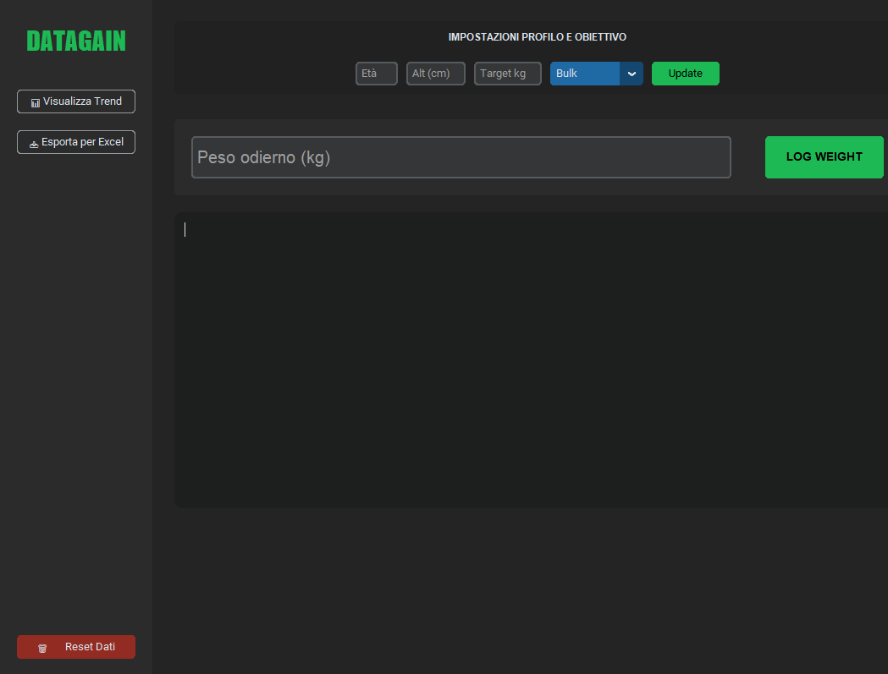

Monitorare il peso corporeo senza contestualizzare il trend può portare a decisioni errate nella dieta. DataGain Pro nasce per eliminare l'incertezza, offrendo uno strumento di analisi predittiva che stima la data di raggiungimento dell'obiettivo (Bulk/Cut) basandosi sulla velocità reale di variazione del peso.
Scarica il pacchetto completo contenente l'eseguibile e i file sorgente:
Scarica DataGainPro.exeIl software calcola la velocità media giornaliera e proietta il trend nel futuro per stimare il traguardo:
# Calcolo della velocità di crociera e proiezione temporale
velocita_giornaliera = guadagno_totale / giorni_passati
kg_da_percorrere = target - media_attuale
giorni_rimanenti = int(abs(kg_da_percorrere / velocita_giornaliera))
# Calcolo data stimata del traguardo
data_traguardo = datetime.now() + timedelta(days=giorni_rimanenti)
Implementazione della formula scientifica di Mifflin-St Jeor per il calcolo del BMR e ripartizione dinamica dei macronutrienti:
# Calcolo BMR e target calorico dinamico
bmr = (10 * peso) + (6.25 * altezza) - (5 * eta) + 5
tdee = bmr * 1.55 # Moltiplicatore attività moderata
# Ripartizione Macronutrienti
proteine = int(peso * 2.2)
grassi = int(peso * 0.8)
carboidrati = int((calorie_target - (proteine * 4) - (grassi * 9)) / 4)
Interfaccia dashboard moderna con sidebar fissa e visualizzazione grafica del trend tramite Matplotlib:
